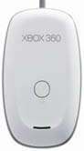

Use your Rock Band 2 wireless drumkit as a MIDI controller
rb2midi version 0.48 was first made available on May 5, 2010.
Freeware utility for triggering MIDI drums
This is a little program I wrote because I wanted to use my Rock Band 2 drums as a handy MIDI controller for my digital audio workstation, and there didn't seem to be any freely available software to make this easy to do. It works very effectively for a simple utility program, achieving a relatively low latency.
Basic features:
- Select desired MIDI output interface on startup.
- Pick the MIDI note triggered by each pad, cymbal and pedal.
- Control the length and velocity of triggered notes.
- Velocity sensitivity (4 levels) for pads and cymbals.
- Load/save settings for particular hardware or VST plugins.
- Minimizes to system tray to avoid desktop clutter.
Advanced features (added in version 0.48):
- Complete redesign of user interface.
- Use hi-hat pedal to switch between different midi notes on the cymbals.
- Trigger midi note on pedal up as well as pedal down (if you want to).
- More control over velocity curve.
- Randomization of velocity can also be turned on.
System Requirements
 Ideally you should use this program with one of the Rock Band 2 controllers made by Harmonix. This will allow you to take advantage of features such as the velocity sensitive pads and the add-on cymbals. It will also work with Rock Band 1 drumkits, but you get no velocity with the pads on that kit.
All the Rock Band 2 kits are wireless controllers. If you have the Xbox 360 drum kit, you will need a wireless receiver of some kind to connect the kit to a PC. The one shown on the left is the Xbox 360 Wireless Gaming Receiver for Windows, for which this utility was originally developed. I don't think you can actually buy that one any more, but there's a new one for Windows 10 which is much more compact (Xbox Wireless Adapter for Windows 10).
Those who own a Playstation or Wii version of the Rock Band 2 drum kit are the lucky ones. There is a USB wireless receiver included when you buy the kit itself. Just connect the dongle to your PC and you are ready to go! The Wii dongle is shown below on the left, the Playstation dongle is shown on the right. If you are buying a kit purely for MIDI purposes, these are the ones to go for.
There is one other thing you are likely to need if you want to use this utility to trigger a VSTi plugin in Cubase, Ableton Live, or any other DAW. A MIDI loopback driver (i.e. a virtual patch cable) is needed to route the MIDI messages correctly to the DAW. I use the free program LoopBe1 for this purpose, but there are other free alternatives such as Hubi's MIDI Loopback Driver and MIDI Yoke.
Here is a summary of the configuration I used during development:
- Microsoft Windows XP (service pack 3)
- Cubase 4 Essentials
- Xbox 360 Wireless Gaming Receiver for Windows
- Xbox 360 Wireless Drum Controller for Rock Band 2
- (optional) Madcatz Triple Cymbal Expansion Kit for Rock Band 2
Contact Details
Note that I cannot offer extensive support for this program, but I am interested to hear if you have used the program and like it, especially if your system configuration differs from mine. I would also like to hear about any bugs if you find them, or any feature suggestions you might have.
E-mail: rb2midi (at) mattgrounds (dot) com